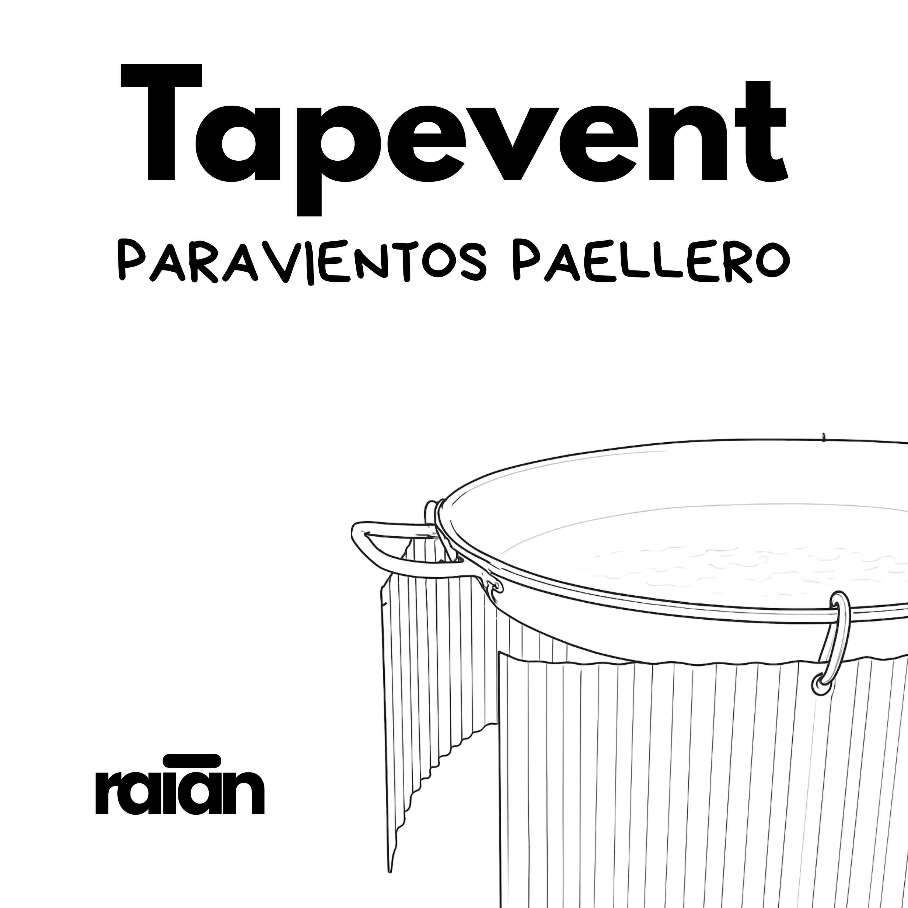

Guía de producto
Paravientos
Todo lo que necesitas para aprovechar mejor tu paravientos: montaje, consejos de uso y una sección de recetas para sacar más partido a cada comida.

Hemos preparado esta guía para que tengas a mano la información más útil de tu producto. Elige la sección que quieras consultar.